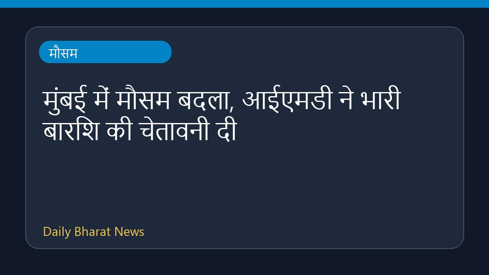

मुंबई में मौसम बदला, आईएमडी ने भारी बारिश की चेतावनी दी

मुंबई में मौसम का मिजाज बदल गया है और भारतीय मौसम विज्ञान विभाग (IMD) ने बहुत भारी बारिश होने की भविष्यवाणी की है। इसके अलावा, पड़ोसी जिले पालघर के लिए आज ऑरेंज अलर्ट जारी किया गया है। मौसम में आए इस बदलाव और संभावित बारिश को देखते हुए स्थानीय प्रशासन और नागरिकों को सतर्क रहने की सलाह दी गई है। इस संबंध में विस्तृत जानकारी अभी सीमित है।
मूल स्रोत: Weather News Sources
Mumbai weather turns, IMD predicts ‘very heavy’ rain; Palghar under orange alert today - The Indian Express ↗
Mumbai weather turns, IMD predicts ‘very heavy’ rain; Palghar under orange alert today - The Indian Express ↗